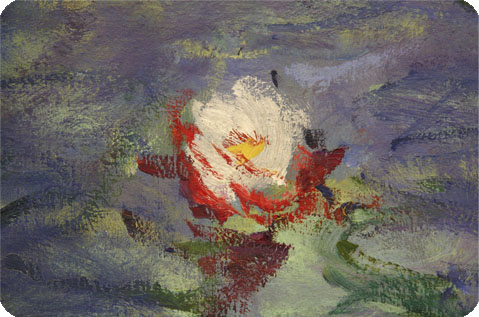

![ Musée de l'Orangerie Das mit Blick auf Seine und Tuilerien herrlich gelegene Museum erfreut sich großer Beliebtheit. Die Collection Jean Walter et Paul Guillaume umfasst 144 einzigartige Gemälde. Paul Guillaume gehörte zu den Kunsthändlern und Sammlern, die geschmackssicher und mutig noch unbekannten Künstlern eine Chance gaben. Er setzte sich früh für Utrillo ein und war einer der wenigen, die Modigliani unterstützten. Nach dem Tod Guillaumes führten seine Witwe und ihr zweiter Mann,Jean Walter, die Sammlung fort, die 1977 in den Besitz des Louvre überging. Chaim Soutine (1893-1943), einer der Schützlinge Guillaumes, ist mit zahlreichen Werken vertreten. Qualvoll verzerrte Gesichtszüge und expressive Stillleben mit blutigem Wildbret zeugen von seinem aufgewühlten Temperament. Im Kontrast dazu stehen die Gemälde von Paul Cezanne (1839-1906), der nach Gleichgewicht und Harmonie strebte. Einige seiner Hauptwerke sind hier zu sehen: Pommes et Biscuits (1880), eines der Stillleben, mit denen Cezanne sich über die traditionelle perspektivische Darstellung hinwegsetzte, und die lyrische Landschaft Dans le Parc de Chateau Noir (1900). Auch von Auguste Renoir (1841-1919) sind einige Meisterwerke vertreten: Jeunes Filles au Piano (1890), Claude Renoir en Clown (1909) und mehrere Badende. Zur blauen Periode von Pablo Picasso (1881-1973) gehört das Pastell L'Etreinte (1903). Seine klassisch genannte Periode illustrieren die monumentalen Badenden von 1921 bis 1923.Stillleben von Andre Derain (1880-1954), Porträts von Modigliani (1884-1920) und Bilder der Odalisken von Henri Matisse (1869-1954) vervollständigen den Überblick über die französische Malerei zwischen den beiden Weltkriegen. Voller Poesie und Tristesse sind die Stadtansichten von Maurice Utrillo (1883-1955), deren kalkiges Weiß tausend Nuancen kennt. Von Henri Rousseau (1844-1910) sind u.a. zwei große Gemälde zu bestaunen, La Noce (1905) und Carriole du Pere Junier (1908), deren erstarrte, frontal dargestellte Personengruppen mit sicherer Kenntnis, gar nicht >naiv<, komponiert sind.Andächtig zumute wird einem beim Betreten der beiden ovalen Säle im Erdgeschoss, die den Nympheas genannten Seerosenbildern Vorbehalten sind. Die riesigen Gemälde, die die unendlichen atmosphärischen Variationen im optischen Zusammenspiel von Wasser, Himmel und Vegetation thematisieren, stellen den Höhepunkt in Claude Monets Werk dar. Von 1918 bis zu seinem Tod 1926 wurden die von ihm selbst im Garten seines Hauses in Giverny (Normandie) gepflanzten Seerosen zu seiner letzten künstlerischen Passion. Die durchaus ernsten und von abstrahierender Farbgewalt durchwebten Bilder gehen in ihrer elementaren Aussagekraft bereits weit ueber den sonst so heiter anmutenden Impressionismus hinaus.](preview://img/130b.jpg){kind=link}
Musée de l'Orangerie
Das mit Blick auf Seine und Tuilerien herrlich gelegene Museum erfreut sich großer Beliebtheit. Die Collection Jean Walter et Paul Guillaume umfasst 144 einzigartige Gemälde. Paul Guillaume gehörte zu den Kunsthändlern und Sammlern, die geschmackssicher und mutig noch unbekannten Künstlern eine Chance gaben. Er setzte sich früh für Utrillo ein und war einer der wenigen, die Modigliani unterstützten. Nach dem Tod Guillaumes führten seine Witwe und ihr zweiter Mann,Jean Walter, die Sammlung fort, die 1977 in den Besitz des Louvre überging. Chaim Soutine (1893-1943), einer der Schützlinge Guillaumes, ist mit zahlreichen Werken vertreten. Qualvoll verzerrte Gesichtszüge und expressive Stillleben mit blutigem Wildbret zeugen von seinem aufgewühlten Temperament. Im Kontrast dazu stehen die Gemälde von Paul Cezanne (1839-1906), der nach Gleichgewicht und Harmonie strebte. Einige seiner Hauptwerke sind hier zu sehen: Pommes et Biscuits (1880), eines der Stillleben, mit denen Cezanne sich über die traditionelle perspektivische Darstellung hinwegsetzte, und die lyrische Landschaft Dans le Parc de Chateau Noir (1900). Auch von Auguste Renoir (1841-1919) sind einige Meisterwerke vertreten: Jeunes Filles au Piano (1890), Claude Renoir en Clown (1909) und mehrere Badende. Zur blauen Periode von Pablo Picasso (1881-1973) gehört das Pastell L'Etreinte (1903). Seine klassisch genannte Periode illustrieren die monumentalen Badenden von 1921 bis 1923.Stillleben von Andre Derain (1880-1954), Porträts von Modigliani (1884-1920) und Bilder der Odalisken von Henri Matisse (1869-1954) vervollständigen den Überblick über die französische Malerei zwischen den beiden Weltkriegen. Voller Poesie und Tristesse sind die Stadtansichten von Maurice Utrillo (1883-1955), deren kalkiges Weiß tausend Nuancen kennt. Von Henri Rousseau (1844-1910) sind u.a. zwei große Gemälde zu bestaunen, La Noce (1905) und Carriole du Pere Junier (1908), deren erstarrte, frontal dargestellte Personengruppen mit sicherer Kenntnis, gar nicht >naiv<, komponiert sind.
Andächtig zumute wird einem beim Betreten der beiden ovalen Säle im Erdgeschoss, die den Nympheas genannten Seerosenbildern Vorbehalten sind. Die riesigen Gemälde, die die unendlichen atmosphärischen Variationen im optischen Zusammenspiel von Wasser, Himmel und Vegetation thematisieren, stellen den Höhepunkt in Claude Monets Werk dar. Von 1918 bis zu seinem Tod 1926 wurden die von ihm selbst im Garten seines Hauses in Giverny (Normandie) gepflanzten Seerosen zu seiner letzten künstlerischen Passion. Die durchaus ernsten und von abstrahierender Farbgewalt durchwebten Bilder gehen in ihrer elementaren Aussagekraft bereits weit ueber den sonst so heiter anmutenden Impressionismus hinaus.
![Andächtig zumute wird einem beim Betreten der beiden ovalen Säle im Erdgeschoss, die den Nympheas genannten Seerosenbildern Vorbehalten sind. Die riesigen Gemälde, die die unendlichen atmosphärischen Variationen im optischen Zusammenspiel von Wasser, Himmel und Vegetation thematisieren, stellen den Höhepunkt in Claude Monets Werk dar. Von 1918 bis zu seinem Tod 1926 wurden die von ihm selbst im Garten seines Hauses in Giverny (Normandie) gepflanzten Seerosen zu seiner letzten künstlerischen Passion. Die durchaus ernsten und von abstrahierender Farbgewalt durchwebten Bilder gehen in ihrer elementaren Aussagekraft bereits weit ueber den sonst so heiter anmutenden Impressionismus hinaus.](preview://img/130.jpg){kind=link}